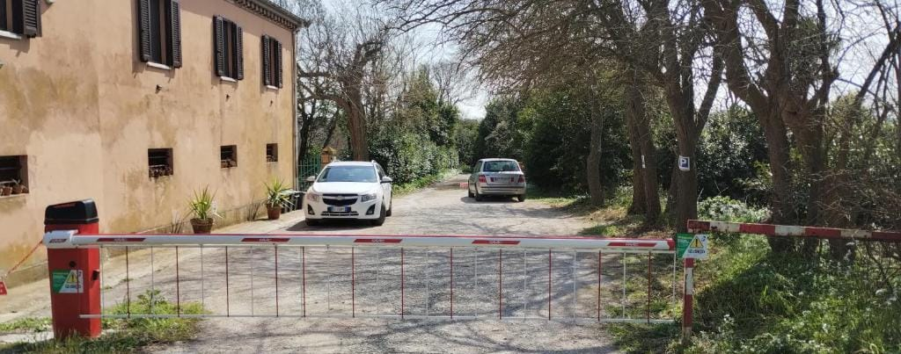

Surroundings
The Conero beaches on foot, Ancona in ten minutes.
What is around the house
The house sits inside the Conero Regional Park, on the northern side of the mountain. The wildest beaches on the coast are a walk away, the equipped ones a few minutes by car.
A long natural reef running into the sea: snorkelling, sunsets and very few people.
A free beach at the foot of the cliffs, one of the most beautiful on the Conero. Reached by footpath.
The bay with its Romanesque church, seafood restaurants and local mussels, beach clubs and the Napoleonic fort.
The old town, the harbour, the Passetto and the cathedral of San Ciriaco. Trains, and ferries to Croatia.
The villages on the sea, the Due Sorelle rocks by boat, walks in the Conero park.
Falconara Marittima, about 25 minutes by car.
By car, train or plane
A14 motorway, exit Ancona Sud, then towards Ancona and Montacuto: about 15 minutes. Free private parking at the house.
Ancona station is 6.6 km away, about 15 minutes by taxi.
Ancona Falconara airport is 19 km away. A car is recommended to get around the coast.

Book direct for the best rate
Send us your dates: we reply within the day with availability and price.